| Nombre | Descripción | Ubicación / Imagen |
|---|
Furia de los caídos.jpg) |
Este es el primer amuleto que puedes conseguir al iniciar el juego, se encuentra en éste lugar de paso del rey. este amuleto aumenta el daño del aguijón en un enorme 75% cuando solo te queda una máscara |
.jpg)
 |
Brújula caprichosa |
Éste amuleto se consigue muy fácil, pues lo único que debes hacer es encontrar a Cornifer dentro de cruces olvidados, comprarle un mapa y luego subir a bocasucia, al regresar, su tienda estará abierta dónde te atenderá Iselda; su esposa, ahí podrás comprar éste amuleto. Su función es mostrar tu posición exacta en el mapa en tiempo real |
 |
Enjambre recolector |
Con éste amuleto la historia es muy similar. Debes encontrar a Sly en ésta sección de cruces olvidados y hablar con él para hacerlo salir de su trance, luego de eso regresará a su tienda en bocasucia dónde podrás comprarle el amuleto. Éste amuleto despliega unos pequeños bichos voladores que llevaran hacia a ti todo el geo tirado que haya cerca, perfecto si no te gusta desperdiciar ni uno solo |

 |
Coraza robusta |
Aumenta el aguante. Al recuperarse del daño recibido, el portador será invulnerable durante más tiempo. Permite escapar más fácilmente de situaciones peligrosas. Incrementa la invulnerabilidad otorgada tras recibir daño a 2 segundos. Ocupa 2 muescas. Vendido por Sly en Bocasucia a 200 Geo. |
 |
Atrapaalmas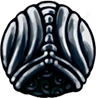 |
Utilizado los chamanes para extraer más ALMA del mundo que los rodea. Aumenta la cantidad de ALMA obtenida al golpear a un enemigo con el aguijón. Gana ~27% más de ALMA por golpe y ocupa dos muescas. Se encuentra al fondo del Montículo Ancestral, tras derrotar al Baldur anciano. |
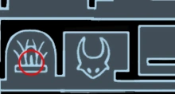 |
Piedra de chamán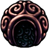 |
Piedra de chamán es un amuleto en Hollow Knight. Incrementa el daño de los hechizos y el tamaño de Espíritu Vengativo y Alma sombría. Vendido por Salubra a Geo220 en Cruces Olvidados. Aumenta el daño de espíritu vengativo/Alma sombría en un 33%. Aumenta el daño de salto desolador en un 51% y oscuridad descendente en un 47%. Aumenta el daño de espectros aulladores/Chillido del Abismo en un 50%. Aumenta el tamaño de espíritu vengativo/alma sombría. Ocupa tres muescas |

|
Devoraalmas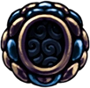 |
Artefacto chamán olvidado. Utilizado para extraer ALMA de criaturas aún vivas. Aumenta mucho la cantidad de ALMA obtenida al golpear a un enemigo con el aguijón. Otorga ~72% más de ALMA por cada golpe. Se encuentra en Tierras de Reposo. Requiere Salto desolador. Usa Salto desolador en la tumba que se encuentra justo debajo de la Estación de ciervos y ve hacia la derecha. El amuleto se encuentra cerca de la estatua de un chamán. Ocupa 4 muescas |
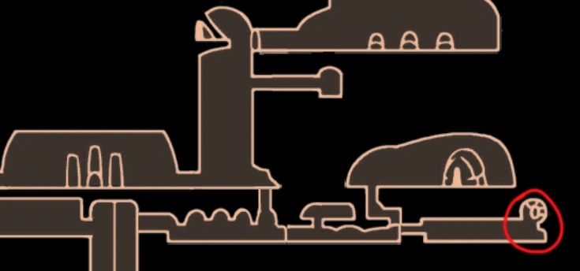
|
Maestro de las embestidas |
Se asemeja a un insecto excéntrico conocido únicamente como el Maestro de las embestidas. El portador podrá realizar el Avance Rápido con más frecuencia, así como realizar el Avance Rápido hacia abajo. Perfecto para quienes desean desplazarse lo más rápido posible. Reduce el enfriamiento de Avance Rápido un 50% y permite realizar el Avance Rápido hacia abajo. Se encuentra bajo una estatua en la Aldea mantis de Páramos Fúngicos, cerca de la entrada hacia Canales Reales. Ocupa dos muescas |

|
Maestro de sprint |
Lleva el parecido a un extraño insecto conocido como "El Maestro de Sprints". Aumenta la velocidad al correr del portador, permitiéndole esquivar el daño o adelantar al rival. Vendido por Sly en Bocasucia a Geo 400, requiere haber adquirido la Llave del comerciante. Ocupa 1 muesca |
|
Canción de larvas |
Contiene la gratitud de las larvas liberadas. Consigue ALMA al recibir daño. Gana un 15% de ALMA al recibir daño. Dado por el Padre Larva una vez el jugador ha liberado 10 Larvas cautivas. Ocupa 1 muesca |
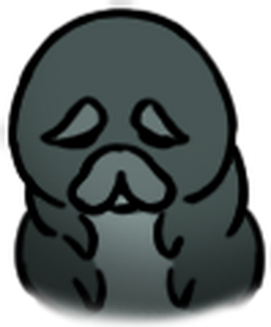
|
Elegía de la Larvamosca |
Contiene la gratitud de las larvas que pasarán a la siguiente etapa de sus vidas. Infunde a las armas una fuerza sagrada. Al tener todas las máscaras, los ataques del aguijón lanzan rayos de energía que hacen 0.5 x Daño del aguijón. Dado por el Padre Larva tras liberar a 46 Larvas Cautivas. Ocupa 3 muescas |
|
Corazón frágil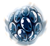 |
Aumenta la salud del portador, con lo que puede recibir más daño. Este amuleto es frágil y se romperá si su portador muere. Proporciona 2 máscaras de vida. Vendido por Comepiernas en Páramos Fúngicos a Geo350. Si llevamos el Blasón del defensor bajará el precio a Geo280. Si lo hemos roto, Comepiernas lo reparará por Geo200, o, por Geo160 si llevamos el Blasón del defensor. Ocupa 2 muescas |
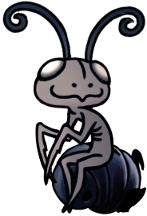
|
Corazón irrompible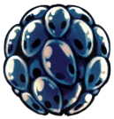 |
Una vez el jugador haya llamado a la Compañía de Grimm, Divine aparecerá en Bocasucia. Para conseguir la versión irrompible de Corazón frágil, el jugador debe equiparse el amuleto y hablar con ella, tras ello se lo comerá y pedirá a cambio Geo12,000 para la versión mejorada. Ocupa 2 muescas |

|
Codicia frágil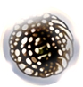 |
Hace que el portador encuentre más geo al derrotar enemigos. Este amuleto es frágil y se romperá si su portador muere. Los enemigos sueltan 20% más de Geo. Vendido por Comepiernas en Páramos Fúngicos a Geo 250. Si llevamos el Blasón del defensor bajará el precio a Geo 200. Si lo hemos roto, Comepiernas lo reparará por Geo 150, o por Geo120 si llevamos el Blasón del defensor. Ocupa 2 muescas |
|
Codicia irrompible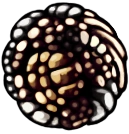 |
Una vez el jugador haya llamado a la Compañía de Grimm, Divine aparecerá en Bocasucia. Para conseguir la versión irrompible de Codicia frágil, el jugador debe equiparse el amuleto y hablar con ella, tras ello se lo comerá y pedirá a cambio Geo 9,000 para la versión mejorada. Ocupa 2 muescas |
|
Fuerza frágil |
Fortalece al portador, lo que aumenta el daño que este inflige a los enemigos con su aguijón. Este amuleto es frágil y se romperá si su portador muere. Aumenta el daño del aguijón un 50%. Vendido por Comepiernas en Páramos Fúngicos a Geo600. Si llevamos el Blasón del defensor bajará el precio a Geo480. Si lo hemos roto, Comepiernas lo reparará por Geo350, o por Geo280 si llevamos el Blasón del defensor. Ocupa 3 muescas |
|
Fuerza irrompible |
Una vez el jugador haya llamado a la Compañía de Grimm, Divine aparecerá en Bocasucia. Para conseguir la versión irrompible de Fuerza frágil, el jugador debe equiparse el amuleto y hablar con ella, tras ello se lo comerá y pedirá a cambio Geo15,000 para la versión mejorada. ocupa 3 muescas |
|
Tuercehechizos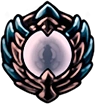 |
Como reflejo de los deseos del Santuario de Almas de dominar el ALMA, mejora la habilidad del portador para lanzar hechizos. Reduce el coste de ALMA al lanzar hechizos un ~27%. Se encuentra en una sala secreta en la cima del Santuario de Almas, justo antes de la batalla contra el Maestro de Almas. Ocupa 2 muescas |
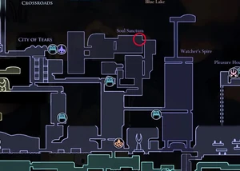
|
Cuerpo firme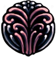 |
Evita que el jugador rebote hacia atrás al golpear a un enemigo con su aguijón. Vendido por Salubra a Geo120 en Cruces Olvidados. Ocupa 1 muesca |
|
Duro golpe |
Hecho con aguijones de guerreros caídos. Aumenta la fuerza del aguijón del portador, lo que hace que los enemigos retrocedan más al recibir un golpe. Vendido por Sly a 350 en Bocasucia, requiere haberle entregado la Llave del comerciante. Ocupa 2 muescas |
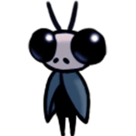
|
Corte rápido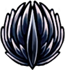 |
Nacido de aguijones imperfectos y desechados que se han fundido. Estos aguijones siguen siendo demasiado largos para empuñarlos. Permite al portador lanzar cortes mucho más rápido con su aguijón. Se encuentra en Límite del Reino, en un altar dentro de una sala oculta. Ocupa 3 muescas |
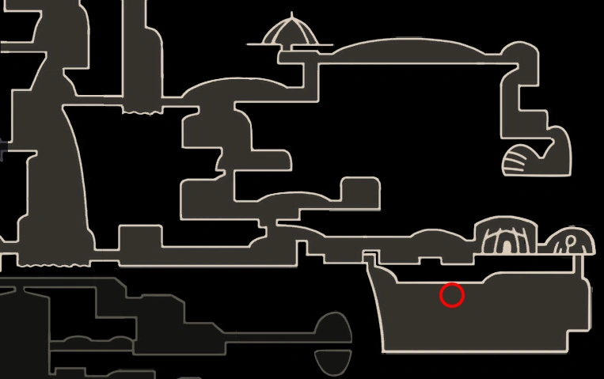
|
Largoaguijón |
Aumenta el alcance del aguijón del portador, lo que le permite golpear enemigos desde más lejos. Aumenta el rango del aguijón un 15% Vendido por Salubra a Geo300. Ocupa 2 muescas |
|
Marca de Orgullo |
Concedida libremente por la tribu mantis a aquellos a los que respetan. Aumenta mucho el alcance del aguijón del portador, lo que le permite golpear enemigos desde más lejos. Aumenta el rango del aguijón un 25% Se encuentra en la Aldea Mantis, dentro de un cofre un una sala al noreste de los Señores mantis. Sólo es accesible una vez les hayamos derrotado. Ocupa 3 muescas |
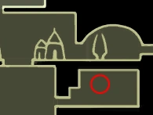
|
Espinas de agonía |
Sienten el dolor de su portador y sueltan golpes al mundo que las rodea. Al recibir daño, hace brotar vides espinosos que dañan a los enemigos cercanos. Daña a los enemigos cercanos haciendo 1 x daño base del aguijón. Se encuentra en Sendero Verde dentro de un laberinto de espinas. Requiere tener Capa de ala de polilla. Ocupa 1 muesca |
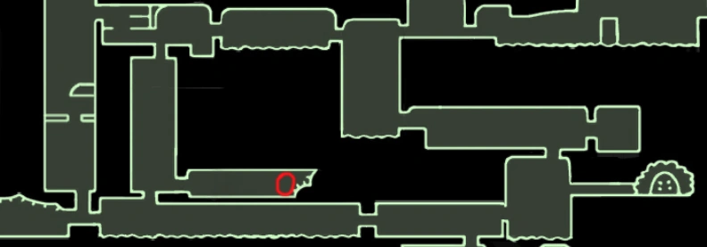
|
Coraza de baldur |
Protege a su portador con una dura coraza mientras concentra el ALMA. La coraza no es indestructible y se hará añicos si absorbe demasiado daño. Bloquea hasta 4 máscaras de daño durante la concentración de alma. Este amuleto se encuentra al suroeste de Acantilados Aulladores. Ahí existe un cofre que sólo contiene Geo1 y si saltamos dentro de él, nos llevará a una cueva protegida por 2 Baldures ancianos, en la que está el amuleto. Ocupa 2 muescas |
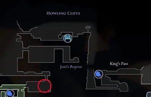
|
Tremanido |
Amuleto vivo originado en las entrañas de una tremarmita. Transforma el hechizo Espíritu vengativo en una horda de volátiles bebés trematodos. Reemplaza Espíritu vengativo o Alma sombría por una horda de trematodos que causan 5 de daño por trematodo. Recompensa por derrotar a Tremarmita en Canales Reales. Ocupa 3 muescas |
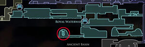
|
Blasón del defensor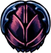 |
Amuleto único otorgado por el Rey de Hallownest a su caballero más leal. Arañado y sucio, pero muy preciado para él. Hace que el portador emita un olor heroico. Crea una nube tóxica que causa 1-3 de daño por tick. Recompensa por derrotar al Defensor del Estiércol en Canales Reales. Ocupa 1 muesca |
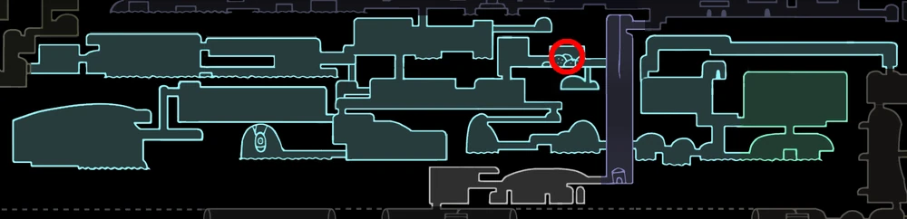
|
Útero brillante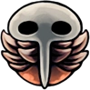 |
Drena el ALMA de su portador y la usa para dar a luz a varias crías. Las crías no desean comer ni vivir, pero se sacrificarán para proteger a su progenitor. Invoca crías que hacen 7 de daño a los enemigos por contacto. Se encuentra en Cruces Olvidados, en una sala secreta a la derecha de la zona del Falso Caballero. Requiere tener Corazón de cristal. Ocupa 2 muescas |
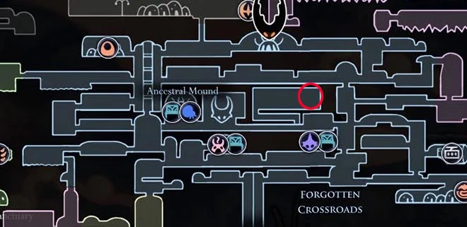
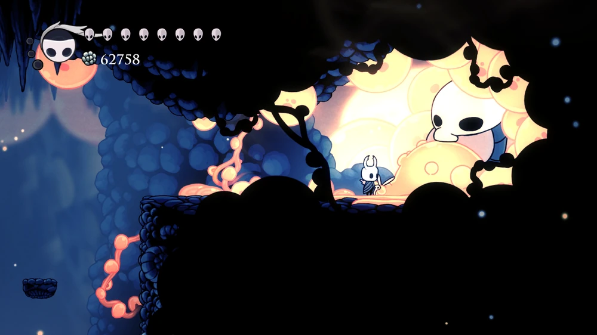 |
Concentración rápida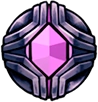 |
Un amuleto que contiene una lente de cristal. Aumenta la velocidad de la concentración de ALMA, con lo que el portador puede curarse de los daños antes. Permite al jugador curarse en la mitad de tiempo. Vendido por Salubra a Geo800 en Cruces Olvidados. Ocupa 3 muescas |
|
Concentración profunda |
Formado naturalmente dentro de un cristal durante mucho tiempo. Atrae ALMA del aire que nos rodea. El portador tardará más en concentrar ALMA, pero su efecto de curación se duplicará. Al concentrarse, cura 2 máscaras al mismo tiempo mientras que aumenta el tiempo de curación en 65%. Se encuentra en Cumbre de Cristal, dentro de una cueva de cristal escondida. Debajo de la zona donde el jugador se encuentra con Cornifer, hay una Cáscara minera minando una pared. Destruye esa pared para revelar un área secreta. Requiere Corazón de cristal. Ocupa 4 muescas |
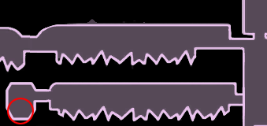
|
Corazón de saviavida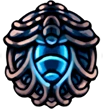 |
Contiene un núcleo vivo que gotea valiosa saviavida. Otorga 2 máscaras de saviavida tras descansar en un banco. Vendido por Salubra a Geo250 en Cruces Olvidados. Ocupa 2 muescas |
|
Núcleo de saviavida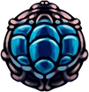 |
Contiene un núcleo vivo que rezuma valiosa saviavida. Proporciona 4 máscaras de saviavida tras descansar en un banco. En el muro izquierdo del Abismo hay una cueva que sólo se abre si el jugador tiene 15 o más máscaras de saviavida, estas pueden ser obtenidas destruyendo capullos de saviavida, o equipándose amuletos como Corazón de saviavida o Bendición de Joni (el cual también transforma las máscaras proporcionadas por Corazón frágil). El amuleto se encuentra al final de esta cueva. También hay un Huevo arcano en la misma área, pero una vez el jugador haya obtenido el Núcleo de saviavida será expulsado de la sala y la puerta permanecerá cerrada para siempre. Por ello, se recomienda coger primero el Huevo arcano y luego el amuleto. Ocupa 3 muescas |
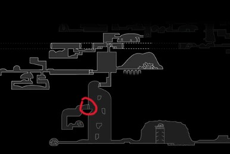
|
Bendición de Joni |
Bendecido por Joni, la bondadosa hereje. Transforma fluidos vitales en saviavida azul. Aumenta el HP un 50%, transforma todas las máscaras en saviavida. Se encuentra en el Descanso de Joni, en una cueva en los Acantilados Aulladores. Ocupa 4 muescas |

|
Sangrecolmena |
Pepita dorada del valioso néctar solidificado de la colmena. Cura pasivamente la última máscara perdida del caballero. Se consigue al vencer al Caballero Colmena, pasando por las puertas de la derecha y bajando un poco tal como indica el mapa. Ocupa 4 muescas |
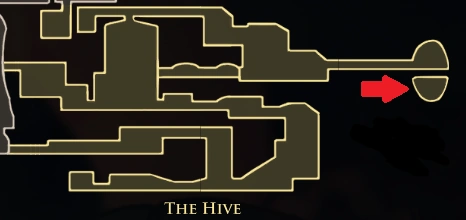
|
Hongo con esporas |
Compuesto de materia fúngica viva. Suelta esporas cuando se le expone a ALMA. Al concentrar ALMA, emite una nube de esporas que causa 1-2 de daño por tick. También permite entender al Señor Seta y leer las tablas de Páramos Fúngicos. Este amuleto se encuentra en Páramos Fúngicos, cerca de la entrada secreta a Jardines de la Reina y Nido Profundo. Requiere Garra de Mantis. Ocupa 1 muesca |
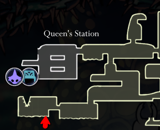
|
Sombra afilada |
Sombra Afilada es un amuleto en Hollow Knight. Daña a los enemigos al avanzar atravesándolos y aumenta la distancia al usar la Capa Sombría. Los enemigos dañados por Sombra Afilada no dan ALMA. Sombra afilada puede dañar enemigos inmunes a ataques del Aguijón. Estate atento que el aumento del 39% al avance rápido puede ser útil contra jefes, al facilitar el atravesarlos y sus ataques, puede hacer zonas de plataformas más difícil. Realiza un golpe del daño del Aguijón al atravezar un enemigo. Aumenta la distancia de la Capa Sombría, en un 39% (Sólo para los avances con Capa Sombría y no de la Capa de ala de polilla). Ubicado en Nido Profundo, al sureste de la fuente de Aguas termales detrás de una Puerta Oscura. Requiere la Capa Sombría. Ocupa 2 muescas |
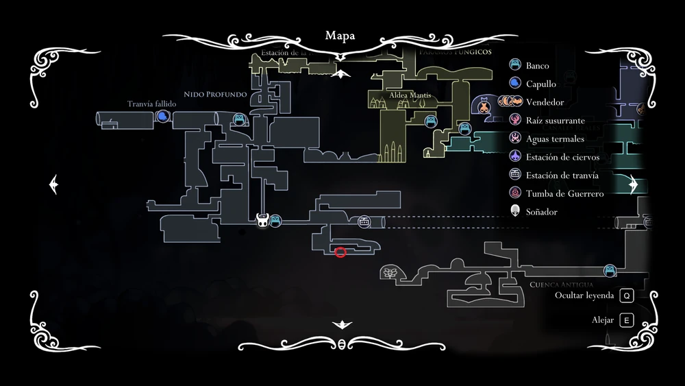
|
Forma de unn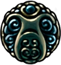 |
Revela la forma de Unn dentro del portador. Al concentrar ALMA, el portador adoptará una nueva forma y podrá moverse libremente para evitar a los enemigos. Dado por Unn en el Lago de Unn. Requiere Lágrima de Isma. Requiere 2 muescas |
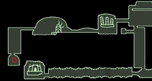
|
Gloria del maestro de aguijones |
Contiene la pasión, las habilidades y los remordimientos de un Maestro de aguijones. Permite cargar las Artes del aguijón el doble de rápido. Dado por Sly en Bocasucia tras aprender las 3 Artes del aguijón de los Maestros de Aguijones. Ocupa 1 muesca |
|
Canción de tejedora |
Amuleto de seda que contiene una canción de despedida, dejado por las tejedoras que dejaron Hallownest por su antiguo hogar. Invoca 3 pequeñas tejedoras que atacan a los enemigos haciendo 3 de daño por golpe. Se encuentra en la Guarida de las Tejedoras. Ocupa 2 muescas |
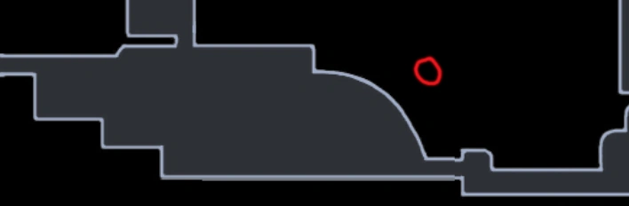
|
Portador onírico |
Amuleto fugaz creado para quienes empuñan el Aguijón Onírico y reúnen Esencia. Permite al portador cargar el Aguijón Onírico más rápido y reunir más ALMA al golpear enemigos. Dado por la Vidente tras conseguir 500 de Esencia. Ocupa 1 muesca |

|
Escudo onírico |
Amuleto defensivo una vez utilizado por una tribu que podía dar forma a los sueños. Conjura un escudo que sigue al portador e intenta protegerle. Se encuentra tras un muro destruible, en Tierras de Reposo, bajo la habitación de la Vidente. Ocupa 3 muescas |
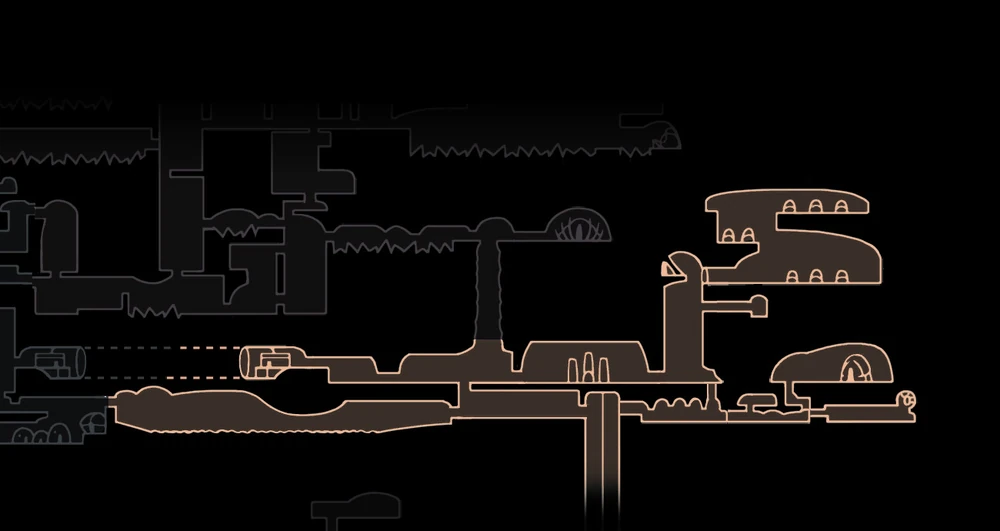
|
Niño de Grimm |
Llevado por aquellos que forman parte del Ritual de la compañía de grimm. El portador debe buscar los grimarios y recolectar sus llamas. Las llamas que no se han recogido aparecerán en el mapa del portador e invoca a un familiar que ataca a los enemigos. Permite al Caballero luchar contra Grimm y el Rey Pesadilla. Dado por Grimm después de invocar a La Compañía de Grimm. Ocupa 2 muescas |

|
Melodía despreocupada |
Melodía despreocupada es un amuleto en Hollow Knight. Tiene una probabilidad de negar el daño cuando el Caballero es golpeado. El daño ambiental (Pinchos, raíces, vacío... etc) no puede ser bloqueado. El contador de golpes no se reinicia al morir o al desequipárselo, lo que lo hace útil en jefes radiantes. El amuleto es particularmente útil cuando no hay vías accesibles de curarse. Permite que otros amuletos (como espinas de agonía) se activen al mismo tiempo que melodía despreocupada, excepto canción de larvas que requiere tomar daño real. Es otorgado por Nymm tras hablar con él en Bocasucia. Para ello hace falta desvanecer la Compañía de Grimm: Derrotar a Grimm. Hablar con Brumm en Nidoprofundo. Apagar la llama en Acantilados Aulladores sin derrotar a Rey Pesadilla. Ocupa 3 muescas |
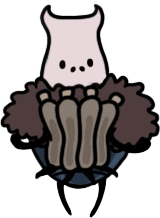
|
Alma del Monarca |
Amuleto sagrado que simboliza la unión entre seres superiores. El portador absorberá lentamente el ALMA interminable que contiene. Abre el camino al lugar de nacimiento. Recupera ALMA poco a poco. Éste amuleto está dividido en 2 partes, una te será dada por la dama blanca en jardínes de la reina y el otro lo conseguirás cómo recompensa después de atravesar el palacio blanco (sin mapa) |

|
Corazón del vacío |
En su interior se escondía un vacío, ahora liberado. Unifica el vacío bajo la voluntad del portador. Este amuleto forma parte de su portador y no se puede eliminar del equipo. Desbloquea 2 finales nuevos, vuelve pasivos a los Hermanos y a la Sombra, bloquea el final inicial. Se encuentra en el Lugar de nacimiento - su entrada está al fondo del abismo, sólo se abrirá si el jugador tiene equipado el Alma del Monarca. Al final del área hay un huevo que si le damos con el Aguijón Onírico revelará una escena del pasado en la que aparece el Rey Pálido. Muescas: Ninguna |
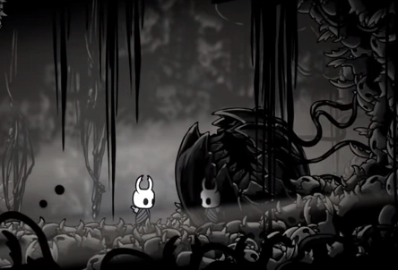
|


.jpg)
.jpg)
.jpg)
.jpg)